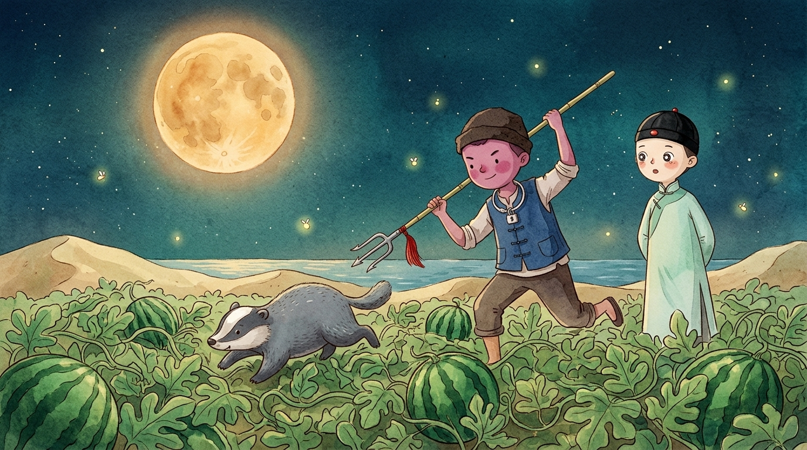
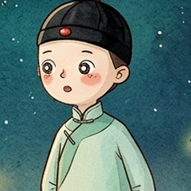

六年级上册 · 第八单元
少年闰土
🌕
月夜看瓜刺猹
❄️
雪地捕鸟技巧
🐚
海边拾贝跳鱼
🌌
四角天空记忆
🎵
📖 本幕研读
⛶

迅哥儿
📜
回顾
⏩
自动
“你颈上套一个明晃晃的银项圈，这是何故？”
第一幕 · 月夜看瓜刺猹 · 银项圈 · 第 1/2 句
点击继续
▼
BACKLOG // 剧情台词回顾
✕
研读与递进 · 第一回目
月夜看瓜刺猹：美学营构与阶层破冰
从色彩张力与民俗符码进入，解析深宅少爷与乡野少年的最初人格互信
✕
📖
本幕核心知识点精解 · 语文要素
🤝
二人关系演化与好感递进
★☆☆☆
25%
士绅少爷与生客之子 ➔ “只是不怕我”的同龄伙伴
“我见人很怕羞，只是不怕我，没有旁人的时候，便和我说话，于是不到半日，我们便熟识了。”
深宅少爷迅哥儿自幼受宗法礼教规训，生活刻板封闭，对民间万象充满原始好奇；闰土虽“怕羞”，但在厨房这一去宗法化的平等空间里“只是不怕我”。银项圈与刺猹经历的讲述消解了陌生防备，二人确立起不依赖宗法礼序的同龄平等人格信任。